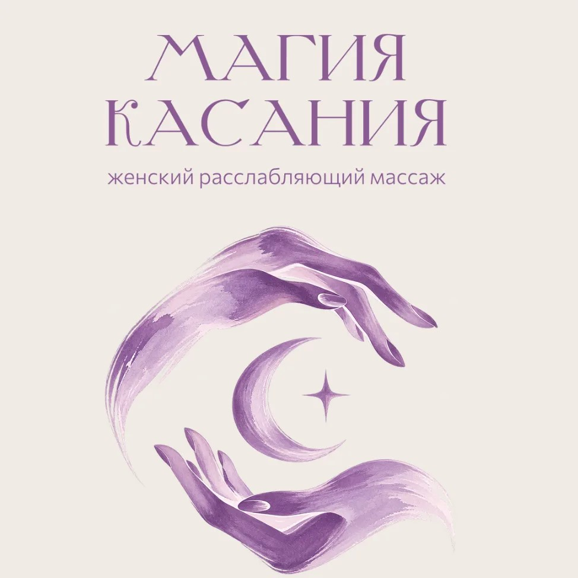

Почувствуйте землю
Заметьте, где тело соприкасается со стулом, полом или кроватью. Не нужно ничего исправлять. Просто позвольте опоре быть.

МАГИЯПРОСТРАНСТВО МЕЖДУ ДЕЛАМИ · 03 / 04
Практики, которые можно взять с собой. Никаких правил, правильных ответов или необходимости что-то менять. Просто побудьте здесь.
НАЧАТЬ С ОДНОГО ВДОХА ↓ДЫХАТЕЛЬНЫЙ РИТУАЛ · В ВАШЕМ ТЕМПЕ
Следуйте за кругом: он растёт на вдохе, замирает на паузе и мягко сжимается на выдохе. В цифрах — сколько осталось в этой фазе.
ЕЩЁ ДВА МГНОВЕНИЯ ДЛЯ СЕБЯ
Заметьте, где тело соприкасается со стулом, полом или кроватью. Не нужно ничего исправлять. Просто позвольте опоре быть.
На выдохе чуть-чуть отпустите плечи. Не нужно тянуться или стараться. Просто дайте им возможность не держать весь день.
Тут нет достижений. Любая пауза уже имеет значение.
БЫСТРАЯ ПРОВЕРКА СЕБЯ
Выберите то, что отзывается. Это не тест — только внимательный вопрос к себе.
«Отдых не нужно заслуживать.»
Если хочется продолжить эту паузу — я рядом.
Найти время для себя ↗